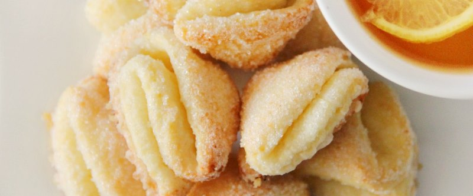

Творожное печенье

70 гр. сливочного масла растопить, добавить 200 гр. торога и 1 яйцо. Хорошо перемешать. Добавить 200 гр. муки и 0,5 ч.л. соды. Вымешать и скатать в кружок, положить на полчаса в холодильник.
Разогреть духовку до 200 градусов. Тесто раскатать толщиной в 0,5 см, вырезать кружочи стаканом, обсыпать каждый кружочек с одной стороны сахаром, сложить пополам сахаром вовнутрь, еще раз проделать операцию, чтобы получилась четвертинка кружочка. Выкладывать на смазанный маслом противень. Выпекать 15 минут.